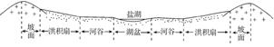
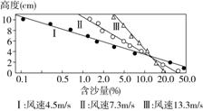

None - Fade - Slide - Convex - Concave - Zoom
选择班级
幻灯片样式
Black (default) -
White -
League -
Sky -
Beige -
Simple
Serif -
Blood -
Night -
Moon -
Solarized
“中国龙”——黄河孕育了灿烂的中华文明，但其身体上也存在许多“病症”(如下图所示)。据此回答1、2题。
1．黄河各河段的“病症”，其主要成因及对症的“药方”对应正确的是( )
A．"大量脱发"—气候寒冷干燥—加高、加固堤坝
B．"动脉阻塞"—过度放牧与垦殖—建立自然保护区
C．“腹泻”——地表植被破坏——退耕还林、还草
D．“脚肿”——黄土高原土质疏松，地形崎岖——在下游修筑梯田
2．黄河上游进行梯级开发的有利条件是( )
A．地处我国地势阶梯交界处，河流落差大
B．属亚热带季风气候，年降水量大
C．地势平坦，水量大，水流平缓
D．地处北方地区，气温高，蒸发旺盛
(2018·开封重点中学高二期末)石漠化多发生在亚热带湿润的喀斯特地区，因土壤严重侵蚀导致基岩大面积裸露，地表出现类似荒漠景观的土地退化现象。下表示意贵州省典型石漠化地区2006～2010年土壤侵蚀情况。读表，完成3、4题。
3.该地区石漠化严重的主要人为原因是( )
A．地形崎岖
B．降水丰富
C．过度垦殖
D．过度放牧
4．高原山地的土地利用方式中，土壤侵蚀量最大的是( )
A．坡耕地
B．撂荒地
C．经济果木林
D．水土保持林
(2018·郑州重点中学高二期末)黄土高原上的塬、坡、沟众多，水土流失严重。当地人根据不同地貌特点，采用“保塬、护坡、固沟”等办法，取得了治理与发展并重的良好效果。读图，完成5、6题。
5．与黄土高原的水土流失密切相关的是( )
A．地处季风区与非季风区、水田区与旱地区的过渡地带
B．夏季冷锋形成的暴雨多
C．高原形成时即沟壑纵横
D．黄土土质直立性强
解析 第5题，黄土高原大部分处于季风区内；黄土高原夏季多暴雨，其形成与冷锋有关，B项正确；高原上沟壑纵横是流水侵蚀的结果；黄土土质疏松，地表缺乏植被保护是水土流失的原因，但与其直立性强无关。
6．“保塬、护坡、固沟”措施正确的是( )
A．在塬面上恢复自然植被
B．在坡面上全部植树种草
C．加固河沟堤坝防治洪水
D．在塬面和缓坡上适当开垦耕地
第6题，恢复自然植被主要是在坡面上；在塬面和缓坡上可以适当开垦耕地，D项正确；加固河沟堤坝的主要目的是保持水土。
2017年6月17日是第23个世界防治荒漠化与干旱日，世界主题是“我们的土地，我们的家园，我们的未来”，我国的主题是“防治荒漠化，建设绿色家园”。结合下图，完成7、8题。
7．云贵高原和黄土高原水土流失的共同成因是( ) ①石灰岩广布，土壤发育浅薄 ②植被破坏 ③土质疏松 ④夏季降水集中且强度大
A．①②
B．②④
C．③④
D．②③
8．土壤次生盐渍化严重地区南方少、北方多的主要原因是( )
A．北方平原面积比南方多
B．北方春旱及不合理的灌溉方式
C．南方多水田，北方多旱地
D．人类大量开垦湿地
“黄土坡、黄土塬，沟里头望不到外头的天……”歌词中的“黄土塬”是我国西北地区群众对顶面平坦宽阔、周边为沟谷切割的黄土堆积高地的俗称。读黄土塬地貌等高线图，回答9、10题。
9．下图为该地区水土流失原因分析图，图中自然因素中的动力是( )
A．冬季所刮的西北风
B．植被稀少
C．人类进行的农业生产活动
D．夏季的暴雨
10．为合理利用土地、保持水土，下列做法正确的是( ) ①甲处打坝淤地 ②乙处整修梯田 ③丙处修建水库 ④丁处平整土地
A．①②
B．②③
C．③④
D．②④
下图示意我国西北某闭合流域的剖面。该流域气候较干旱，年均降水量仅为210毫米，但湖面年蒸发量可达2 000毫米，湖水浅，盐度饱和，水下已形成较厚盐层。据此完成11、12题。
11．盐湖面积多年稳定，表明该流域的多年平均实际蒸发量( )
A．远大于2 000毫米
B．约为2 000毫米
C．约为210毫米
D．远小于210毫米
解析 第11题，盐湖面积多年稳定，说明多年平均实际蒸发量与年均降水量相当。由材料可知，该地年均降水量仅为210毫米，因此，多年平均实际蒸发量约为210毫米。
12．如果该流域大量种植耐旱植物，可能会导致( )
A．湖盆蒸发量增多
B．盐湖面积缩小
C．湖水富营养化加重
D．湖水盐度增大
第12题，植物生长吸收水分，如果该流域大量种植耐旱植物，会使得流入盐湖的水量减少，导致盐湖面积缩小。
(2019·河北保定高三第二次模拟考试)植被覆盖度是指单位面积内植被地上部分(包括叶、茎、枝)在地面的垂直投影面积占统计区总面积的百分比。图甲示意2001～2010年内蒙古三大统计区植被覆盖度的年际变化，图乙示意这种变化与年降水量和年均温的相关性。据此回答13、14题。
13．图甲中曲线①②③分别代表( )
A．森林区、荒漠区、草原区
B．森林区、草原区、荒漠区
C．草原区、森林区、荒漠区
D．草原区、荒漠区、森林区
14．内蒙古2001～2010年植被覆盖度的变化特点及其与气候要素的相关性为( )
A．与2001年相比，2010年内蒙古的植被覆盖度整体呈下降趋势
B．年均温的变化对内蒙古荒漠区植被覆盖度的影响大于年降水量的变化
C．森林区植被覆盖度的年际变化大小取决于年均温的变化
D．草原区植被覆盖度的年际变化与年均温呈负相关，与年降水量呈正相关
第14题，由图甲可知，内蒙古植被覆盖度整体上波动变化，并非整体上呈下降趋势。由图乙可知，荒漠区植被覆盖度与年降水量相关性较强，森林区植被覆盖度与年均温的相关性较强，而草原区植被覆盖度的年际变化与年均温呈正相关。
(2019·江苏盐城中学高三模拟考试)玛纳斯河源于天山，河流出山形成了较平缓的冲积扇，冲积扇以下是一条狭长的泉水溢出带。人们以这里天然形成的湖泊或洼地为库址，建成了规模巨大的湿地水库群。目前玛纳斯绿洲已被开垦为新疆重要的绿洲农耕区。下图是玛纳斯河冲积扇及湿地水库群分布图。据此回答15、16题。
15．关于图中冲积扇的说法，正确的是( )
A．此处地势平坦，河流流速较慢，河道不断进行凹岸侵蚀凸岸堆积而形成冲积扇
B．该冲积扇所在地形区是新疆最大的棉花集中产区
C．冲积扇的泥沙颗粒由南向北逐渐增大
D．图示地区的地下水的埋藏深度甲处比
乙处更深
解析 第15题，图中冲积扇的形成过程是河流上游地势陡峭，水流挟带大量泥沙，出山口时，地势趋缓，泥沙沉积形成冲积扇；新疆的最大棉花集中产区在南疆地区；冲积扇的泥沙颗粒由北向南逐渐增大。甲处位于河流出山口处，厚度大，地下水埋藏深，乙处位于冲积扇边缘，地下水埋藏浅。
16．玛纳斯河流域湿地水库群对当地生态环境的有利影响有( ) ①调节气候，增加空气湿度 ②保护流域内的生物多样性 ③使天山上放牧的牧民不必随季节变化转场放牧 ④防风固沙，抵御荒漠化对绿洲的威胁
A．①③④
B．①②③
C．①②④
D．②③④
第16题，根据所学知识和图中信息可知，该流域湿地水库群具有防风固沙、保护流域内的生物多样性、调节气候、增加空气湿度的作用，可以抵御洪涝和干旱灾害；天山牧民转场放牧的原因是不同季节天山气温高低不同，牧草生长情况也不同。
植树造林是治理风沙的有效措施。下图是某沙区生物治沙示意图。读图，回答17、18题。
17．三幅图按治沙时间先后顺序排列，正确的是( )
A．A→B→C
B．B→C→A
C．B→A→C
D．C→A→B
第17题，植树造林可以起到防风固沙、保持水土的作用，随着固沙植物的生长，移动沙丘也逐渐得到控制，沙丘移动速度逐渐减慢、坡度逐渐降低，C→A→B反映了这一发展过程。
18．在我国西北干旱、半干旱区进行这项工作时，最适宜选种的植物是( )
A．橡胶树
B．椰子树
C．沙拐枣
D．桉树
第18题，我国西北干旱、半干旱区经常选用梭梭、沙拐枣、柠条等作为优良的固沙植物。
1沙尘暴是指强风将地面沙尘物质吹起并卷入空中，使空气混浊，水平能见度降低的灾害性天气现象。下图示意我国西北某县某地同一粒径的沙子在不同风速下含沙量随高度变化的分布情况。回答19、20题。
19．读图可知，同一粒径的沙子( )
A．同一高度含沙量与风速呈正相关
B．同一风速含沙量与高度呈负相关
C．任一高度含沙量与风速均有关
D．颗粒越大，风力的搬运能力越强
第19题，读图可知，同一粒径的沙子，在3 cm以下的范围内，在同一高度，风速越小，含沙量越大；在3 cm以上的范围内，在同一高度，风速越大，含沙量越大；同一风速含沙量随高度增加而减少；同一粒径的沙子，在3 cm左右的高度，含沙量与风速无关；颗粒越大，风力的搬运能力越弱。
20．该县减少沙尘物质进入空气中的合理措施有( )
A．人工增雨
B．种植高大乔木
C．全部地膜覆盖
D．恢复林草植被
第20题，人工增雨可以减少空气中的沙尘，但实施人工降水需要根据不同云层的物理特性，选择合适时机，且费用较高；全部地膜覆盖，可以减少空气中的沙尘，但沙源地面积广阔，是不现实的措施；读图可知，高大乔木需水量大，在我国西北地区不易种植成活，所以，恢复林草植被是较合理的措施。
边坡绿化客土法是将草种、肥料、保水剂、土壤、有机物、稳定剂等物质充分混合后，通过喷射机按设计厚度均匀喷到需防护的工程坡面上，以达到近似于自然景观的一种绿化方法。下图为进行了绿化的边坡景观图。据此回答21～23题。
21．与传统混凝土工程护坡法相比较，边坡绿化客土法最显著的优势是( )
A．防治滑坡
B．恢复植被
C．美化环境
D．成本低廉
第21题，由材料可知，与传统混凝土工程护坡法相比，边坡绿化客土法最显著的优势是恢复植被，B项正确。两者都有防治滑坡的功能，A项错误；美化环境不是主要目的，C项错误；边坡绿化客土法成本高，D项错误。
22．适合边坡绿化客土法的植物特征有( ) ①植株高大 ②根系发达 ③性喜温凉 ④生长迅速
A．①②
B．③④
C．①③
D．②④
第22题，该工程的主要目的是恢复植被，防治滑坡。故适合边坡绿化客土法的植物需根系发达，生长迅速，②④正确。选择D项。
23．南方地区边坡喷播草种后，需在上方覆盖无纺布，主要目的是( )
A．加大昼夜温差
B．减少土壤板结
C．防止雨水冲刷
D．增加水分下渗
第23题，南方地区降水量大，边坡喷播草种后，需在上方覆盖无纺布，主要目的是防止雨水冲刷，C项正确。无纺布不能加大昼夜温差、减少土壤板结；无纺布保水功能差，增加水分下渗不是覆盖无纺布的主要目的。
(2019·河南新乡高三第一次调研测试)牛肝地是指在红层分布区，受人为干扰，使地表原有的生态结构遭到破坏，在各种外力的综合作用下，土层快速被侵蚀，红色基岩或其风化壳裸露，呈现的红色荒漠景观。下图示意广东省南雄盆地红层荒漠化不同演替阶段下的植物群落变化。读图，回答24、25题。
24．该区域植物群落类型中，土壤有机质含量最多的是( )
A．常绿阔叶林
B．马尾松林
C．次生灌丛
D．草丛
第24题，通常情况下，某地区土壤肥力越高(有机质含量越多)，生物量越大，多样性指数越高。由图可知，该区域常绿阔叶林生物量最大，多样性指数最高，土壤有机质含量最多。故选A项。
25．下列对牛肝地进行生态恢复的措施中，合理的有( ) ①封山育林 ②人为取走表土 ③退耕还林 ④把水平梯田修成坡耕地
A．①②
B．②③
C．①③
D．③④
第25题，水平梯田具有保水、保土、保肥的作用，把水平梯田修成坡耕地，会加大水土流失，不利于生态恢复。人为取走表土会破坏当地植被，不利于生态恢复
26.下图为巴音布鲁克地区示意图。巴音布鲁克湿地发育于天山山脉中部大、小尤尔都斯盆地中。盆地内河流蜿蜒，流向区外。冬季严寒，年平均气温－4.7 ℃。 巴音布鲁克湿地内有国家级天鹅自然保护区，栖息着大量的野生天鹅。湿地周围草场广阔，是传统的畜牧业区。20世纪中后期，出现过牧现象。同时，每年都有大量的畜群进入自然保护区，严重干扰了天鹅的生存与繁殖。
(1)描述图示区域河流干流流向。
(自源头)由东向西流经小尤尔都斯盆地，至巴音布鲁克附近向南流入大尤尔都斯盆地，然后再向东南流出本区。
(2)简析巴音布鲁克湿地的形成条件。
该地区有较多的冰雪融水、大气降水和地下水补给，河流众多；盆地内地势平坦，排水不畅；气温低，蒸发弱；地下冻土发育，阻滞水分下渗。
(3)请你对巴音布鲁克天鹅自然保护区生态环境保护提出建议。
合理放牧，防止草场退化，恢复天然植被，走可持续发展之路；加强对自然保护区的管理，保护湿地，严禁人类活动对天鹅栖息地的干扰和破坏；加强环境教育，提高公众的环保意识。
27．阅读材料，回答下列问题。(12分) 热带雨林就像若干块翡翠串成的“绿色腰带”环绕地球，对于调节全球气候、维护全球生态平衡起着至关重要的作用。下面图甲为世界某区域图，图乙为亚寒带针叶林、热带雨林生态系统的养分循环模式图，图丙为迁移农业造成的土壤肥力变化示意图。
(1)分析图甲中M处的植被对全球环境的影响。
促进全球水循环、调节全球水平衡；影响着地球上大气中的碳氧平衡；调节全球气候；保护生物的多样性，维护全球生态平衡。
(2)结合图乙，说明热带雨林生态系统与亚寒带针叶林生态系统的生物量(单位时间、单位面积上生物体的干物质重量)差异，并简要分析产生这种差异的原因。
(2)差异：热带雨林生态系统的生物量较大；亚寒带针叶林生态系统的生物量较小。原因：热带雨林主要分布在赤道南北两侧，终年高温多雨，植物生长旺盛；亚寒带针叶林主要分布在中高纬度地区，温度低、降水较少，植物生长比较缓慢。
(3)图丙中A为原始森林情况下的土壤肥力状况，依据图乙分析热带雨林生态系统中的土壤一般比较贫瘠的原因。
热带雨林储存的养分最多；枯枝落叶分解释放出的养分被地表径流带走，释放到土壤中的养分少；土壤因淋溶作用而流失养分；土壤养分供生物生长，土壤中积累和补充养分少。
(4)近年来，亚马孙河流域某些地区降水减少了，但流入江河的水量及洪水反而增多了，试分析其原因。
森林被砍伐，涵养水源的功能下降，降水以地表径流的形式进入河流；水土流失加剧，河床淤积，水位抬高，泄洪能力下降。